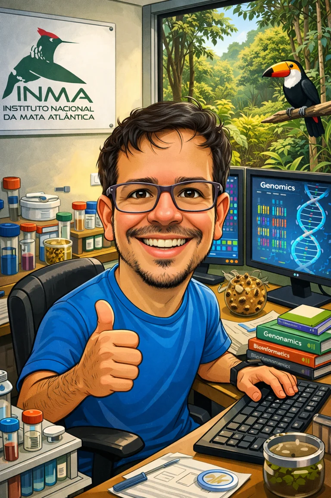

Genômica de
abelhas-sem-ferrão
Recursos genômicos e análises comparativas para investigar a evolução dos Meliponini, com foco na organização dos genomas e em suas regiões repetitivas.
Genomas para compreender
a biodiversidade.
Sou pesquisador do Instituto Nacional da Mata Atlântica (INMA), em Santa Teresa, Espírito Santo. Investigo a biodiversidade por meio da bioinformática, conectando genômica, evolução e conservação.

Minha pesquisa combina montagem e anotação de genomas, genômica comparativa e análise de dados de sequenciamento para estudar organismos e ecossistemas.
Recursos genômicos e análises comparativas para investigar a evolução dos Meliponini, com foco na organização dos genomas e em suas regiões repetitivas.
Genômica comparativa e filogenômica para investigar diversidade, evolução e delimitação de espécies. Integro o Núcleo Ômicas do INCT Leveduras.
Uso DNA ambiental (eDNA) para investigar a biodiversidade da Mata Atlântica, incluindo comunidades associadas a bromélias e riachos.
Montagem, anotação e curadoria de genomas mitocondriais de diferentes grupos da biodiversidade, incluindo anfíbios, abelhas e fungos, com avaliação das sequências e de suas anotações.
Uma seleção de trabalhos sobre abelhas, evolução genômica e diversidade de fungos. Os links levam às publicações originais.
Larissa de Oliveira Rosa Marques; Jamira Dias Rocha; Leonardo Carlos Jeronimo Corvalán; Júllia Costa dos Reis; Cíntia Pelegrineti Targueta; Pedro Vale de Azevedo Brito; Carlos de Melo e Silva Neto; Thiago Mafra Batista; Mariana Pires de Campos Telles; Renata de Oliveira Dias; Rhewter Nunes
Natalia de Souza Araujo; Patricia Azevedo; Rafael Rodrigues Ferrari; Lucas Borges dos Santos; Florence Rodriguez; Roberta Cornélio Ferreira Nocelli; Matthew Hudson; Thiago Mafra Batista; Klaus Hartfelder; Serge Aron
Katharina O Barros; Jassim Al-Oboudi; Larissa F D Freitas; Francisca M P Sousa; Thiago M Batista; Ana Raquel O Santos; Paula B Morais; José Paulo Sampaio; Marc-André Lachance; Chris Todd Hittinger; Carlos A Rosa
Rafael Rodrigues Ferrari; Paulo Cseri Ricardo; Felipe Cordeiro Dias; Natalia de Souza Araujo; Dalliane Oliveira Soares; Qing-Song Zhou; Chao-Dong Zhu; Luiz Lehmann Coutinho; Maria Cristina Arias; Thiago Mafra Batista
Ceslaine Santos Barbosa; Rute R. da Fonseca; Thiago Mafra Batista; Mariana Araújo Barreto; Caio Suzart Argolo; Mariana Rocha de Carvalho; Daniel Oliveira Jordão do Amaral; Edson Mário de Andrade Silva; Enrique Arévalo-Gardini; Karina Solis Hidalgo; Glória Regina Franco; Carlos Priminho Pirovani; Fabienne Micheli; Karina Peres Gramacho
Nenhuma publicação encontrada com esses filtros.
Ferramentas e recursos para organizar análises, documentar resultados e apoiar a pesquisa em genômica.
Pipeline diagnóstico para curadoria de mitogenomas, com inspeção gene a gene, revisão de candidatos e geração de relatórios.
Explorar repositório ↗Projeto de montagem, anotação e curadoria do genoma. O repositório está em preparação para receber métodos e arquivos.
Explorar repositório ↗Uma trajetória entre biologia molecular, bioinformática e genômica da biodiversidade.
Instituto Nacional da Mata Atlântica · INMA
Santa Teresa, Espírito Santo
Bioinformática aplicada à biodiversidade, com ênfase em genômica, DNA ambiental e mitogenômica.
Universidade Federal do Sul da Bahia · UFSB
Porto Seguro, Bahia
Ensino e pesquisa em bioinformática. Atuação em coordenação de curso e infraestrutura de pesquisa.
Universidade Federal de Minas Gerais · UFMG
Universidade Federal de Ouro Preto · UFOP
Centro Universitário de Caratinga · UNEC
Instituto Nacional de Ciência e Tecnologia (INCT) Leveduras — Núcleo Ômicas.
Para assuntos de pesquisa, colaboração científica e formação em bioinformática, entre em contato pelo e-mail institucional.